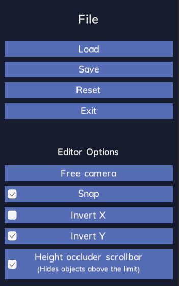
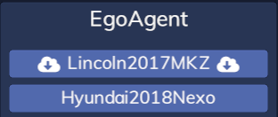
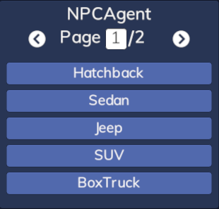
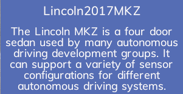
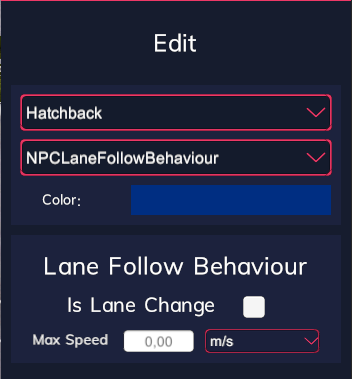
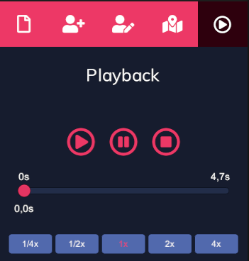

VSE Inspector #
Inspector allows selecting different panels for editing the Scenario. Inspector can be hidden and shown using the button attached to the inspector from the left side. Currently, there are the following panels available to select:
Filecontains basic controls for the VSE like saving, loading, resetting scenario, exiting VSE, and changing the VSE options.Addallows adding new elements to the map.Editallows editing selected map elements, for example selecting variant of an agent or editing waypoint parameters.Mapviews available maps in the library and allows changing map in VSE, changing map resets the scenario.Playbackimitates the scenario simulation, for example, the agents' movement along with the set waypoints.
Future updates will include a plugins system for adding custom inspector panels.
File Panel top#

The file panel in the VSE inspector allows:
Loada scenario from a previously saved JSON file; loading a scenario will first clear (reset) the current scenario and can load a different mapSavethe current scenario to a JSON fileReset Scenarioclears every added elementExit Editorcloses the VSE and returns to the main Simulator window
The options section in the file panel allows to adjust VSE usage:
Camera Mode- toggles current camera mode, switches betweenTop-down camera,Leaned 45° camera, andFree camera. OnlyFree cameraallows rotating the camera with the mouse.Snap- toggling this option enables or disables snapping agents to the map lanes.Invert X- toggling this option inverts the rotation direction while rotating the camera with a horizontal mouse movement in theFree cameramode.Invert Y- toggling this option inverts the rotation direction while rotating the camera with a vertical mouse movement in theFree cameramode.Height occluder scrollbar- toggles the scrollbar that controls the height occluder, which disables visibility of game objects above the set level. This scrollbar is available on the left side of the screen if it is enabled.
Add Panel top#

Placing a new agent into the scenario requires dragging it from the agents' panel. Press the left mouse button on the agent type you want to add and drag it on the map; release the button to place the agent on the map. Different agent types can be added in the same way. If you want to cancel adding an agent, press the right mouse button while dragging an agent. If dragging finishes over the UI, it will cancel drag as well. By default, agents will be snapped to the map lanes; this option can be toggled in the File panel.

VSE lists all the ego vehicles added to the cloud library that are available for used Simulator version. Ego vehicles' names that require downloading contain two cloud icons, pressing their button for the first time invokes the downloading process. The start and stop of the download process are confirmed in the log panel.
VSE loads all the NPCs, pedestrians, and controllables that are configured for the Simulator.

Each scenario element source (Ego vehicles, NPCs, pedestrians, controllables) are available in the separate panels with all available variants. If there are many variants, the list is divided into multiple pages.

The description panel can be viewed for each scenario element when the pointer hovers over the button for a short time. Each element type displays different pieces of information.
Edit Panel top#

Parameters edit panel allows changing more data of the selected map element. After selecting an element, the parameters edit panel will fill with components possible to edit. For example, after selecting an NPC agent it is possible to select its variant, behaviour, color, and add waypoints for this agent. Selecting a waypoint allows you to set the speed and wait time for this waypoint.
Note that only downloaded variants from your SVL Simulator account's "My Library" are available in the dropdown. Refer to the Vehicles section of My Library for more information on how to add vehicles to your library in the Web UI.
Map Panel top#
Map panel views every map available in your SVL Simulator account's "My Library" and allows switching the current map in the VSE. Changing the map always resets the scenario.
Refer to the Maps section of My Library for more information on how to add maps to your library in the Web UI.
Playback Panel top#

The playback panel imitates some of the simulation behaviors to visualize the final scenario effect. Currently, only agents with waypoints path imitate their movement. Playback mode supports the trigger effectors. Extending the TriggerEffectorPlayback class allows overriding trigger effect implementation that will be called only in the VSE playback mode. Some triggers like TimeToCollision require a real-time simulation. To imitate the triggers correctly, VSE records the scenario in real-time when VSE enters the playback mode.
The simulator requires an AD stack to control an ego vehicle. VSE does not support it, but it provides a simple waypoints' following system for Ego vehicles playback. Refer to the Editing Destination Point to read more about setting a playback path for ego vehicles.
Following controls can affect the playback mode after recording a scenario:
Playstarts the playback.Pausefreezes the playback at the current time.Stopstops the playback and resets time to the beginning.Timelineallows flexible time adjustment of the playback.Playback speedchanges the time scale of the playback (available playback speeds: 1/4x, 1/2x, 1x, 2x, 4x).
Editing Scenario Elements top#
Users can parametrize placed scenario elements in the Edit Panel. After selecting a scenario element, different editors will be available. Refer to the VSE Editors page to learn more about scenario element editors.